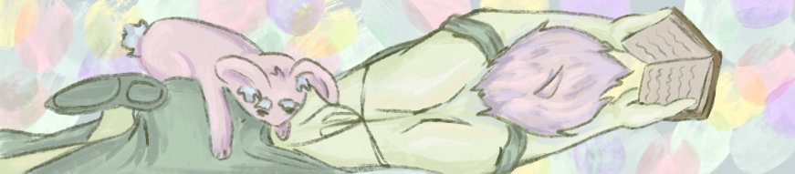

The Picture of Dorian Gray by Oscar Wilde
This book is a must read classic. There are so many good quotes in the book. It really is an examination of beauty in society and the ideas of good and evil.

Project Hail Mary by Andy Weir
I love the book. I'll admit it starts of a little self-inserty, but it gets really really good.

Pride and Prejudice by Jane Austin
I've actually tried reading it before and I didn't really like it the first time, but it's pretty good! I don't typically read romance and it's very romance but I like Lizzy, even though she might have originated the idea of a 'not like the other girls girl.'

Project Hail Mary (movie)
WATCH IT!!! So wholesome, love Rocky, love Ryland Grace.

The Fall Guy (movie)
Cute love story of redemption mixed with action and cool stunt work! Homage to all the unrecognized stunt doubles.

Lord of the Rings Trilogy by J.R.R. Tolkien
This series is a long read, but once you get used to Tolkien's writing style, it becomes very enjoyable. Is all the do walk? Most of the time. But the world building is truly all encompasing and it's a good book to read for the fantasy world.

Tian Guan Ci Fu by Mo Xiang Tong Xiu
It's popular for a reason. One of the longest slow-burn's I think I've read. Then again, I don't really read romance, so...

Link Click (donghua)
Highly recommend. I liked the first season the best by far, but I don't think it necessarily falls off. The vibes definitely change though.